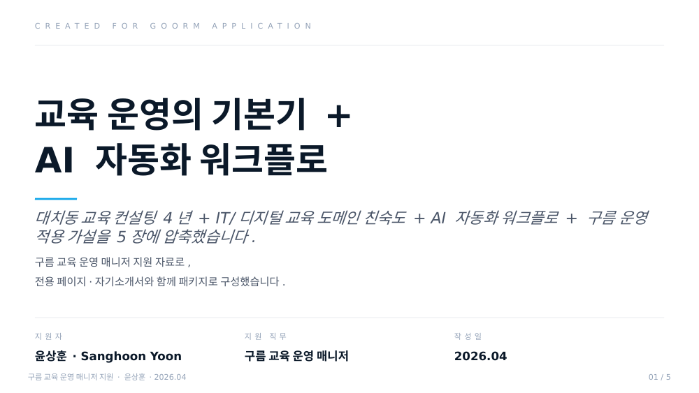
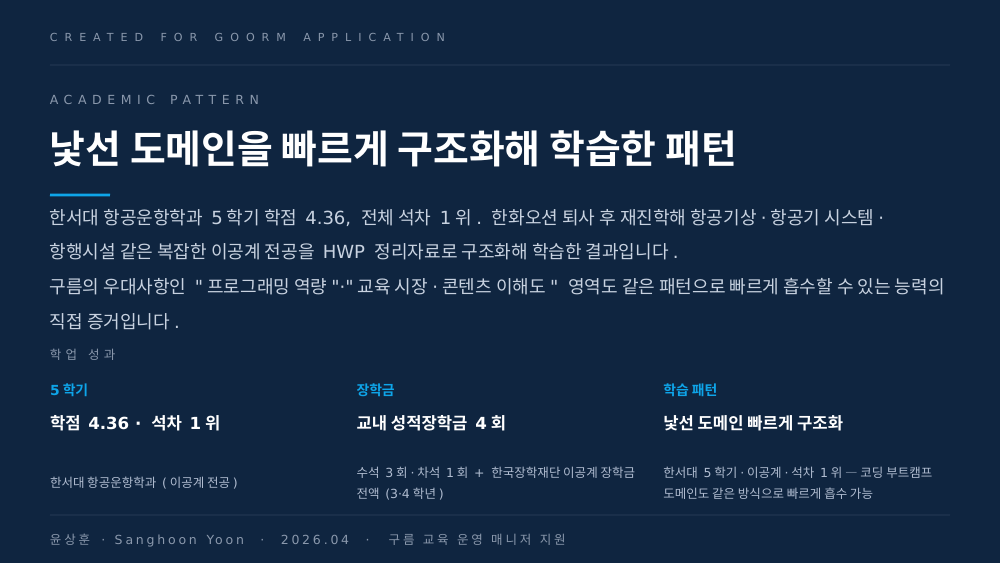
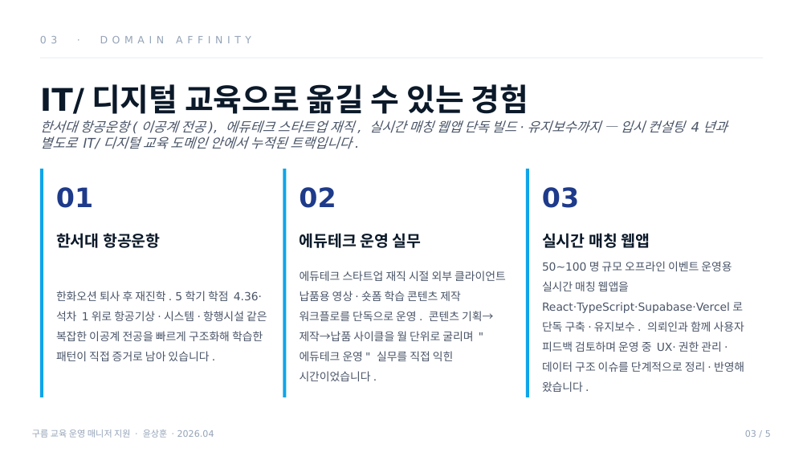
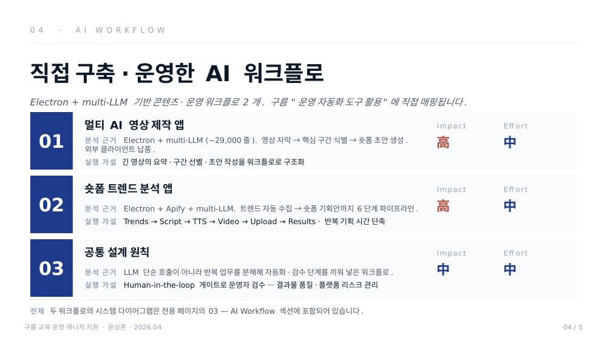
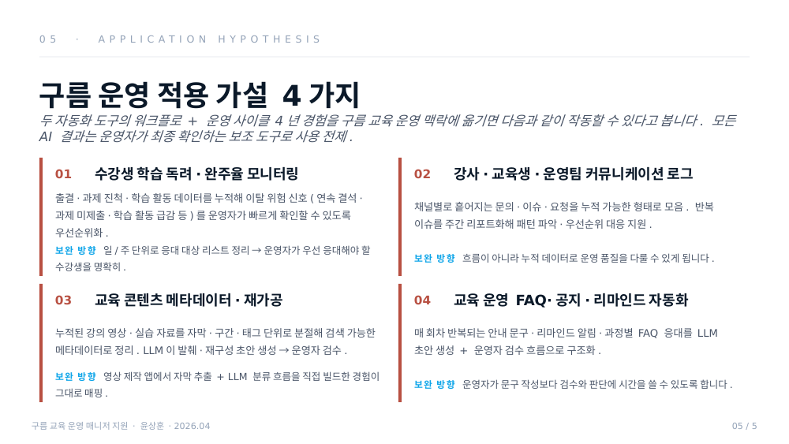

교육 운영의 기본기에,
AI와 개발 도구를 활용한
프로세스 개선 역량을 더해 왔습니다.
대치동에서 4년간 교육 컨설턴트로 일하며 매 시즌 학생 100명 이상의 사전 설문 → 대면 상담 → 후속 관리 → 파이널 콜 사이클을 직접 운영했습니다. 최근에는 실제 사용자가 있는 실시간 웹앱과 AI 기반 콘텐츠·운영 자동화 도구를 직접 만들고 운영하며, 반복 업무를 도구로 구조화하는 경험을 쌓아 왔습니다. 교육 운영 매니저로서 IT 교육의 운영 사이클을 안정적으로 굴리고, 그 사이의 반복 업무를 AI 자동화로 구조화하는 일에 기여하고 싶어 지원드립니다.
거창한 운영 개편이나 자동화보다 먼저, 매 회차의 운영 사이클을 안정적으로 굴리는 일 — 교육 일정·출결·학습 독려·모니터링·교육생 피드백을 빠짐없이 수행하면서, 그 사이의 반복 업무를 AI 자동화로 구조화하는 것이 교육 운영 매니저로서 제가 가장 먼저 기여하고 싶은 일입니다.
(실시간 매칭 웹앱·AI 영상 제작 앱·트렌드 분석 앱)
(한화오션 + 대치동)
매 시즌 학생 100명 이상의
응대 사이클을 직접 운영했습니다.
대치동에서 4년간 매 시즌 학생 100명 이상을 직접 응대하고, 학생별 진행 상태·이슈·후속 조치를 스프레드시트로 직접 관리해 왔습니다. 한 시즌이 끝난 뒤 다음 시즌의 운영 가설로 이어지도록 데이터를 누적했고, 이 4년의 본질은 지식을 전달하는 일이 아니라 각 교육생의 상태를 기록하고 다음 액션으로 연결하며 끝까지 이탈하지 않도록 관리하는 일이었습니다. 구름 교육 운영 매니저의 첫 번째 주요업무인 "교육 일정·출결·학습 독려·모니터링·교육 경험 개선"과 본질이 같습니다.
매 시즌 동일 사이클을 안정적으로 굴리며 학생별 진행 상황을 예측 가능하게 안내. 재등록과 지인 추천이 그 결과로 누적되었습니다.
한화오션 외부 기관 보고용 자료 작성 3년 4개월 + 대치동 정시 컨설팅 학생·학부모 정성·정량 시트 운용 4년. 의사결정자가 짧은 시간에 핵심을 파악할 수 있는 형태로 재구성하는 작업을 7년간 반복.
어떤 상담 경험이 재등록으로 이어지고 어떤 지점에서 이탈 가능성이 커지는지 매 시즌 자료화. 다음 시즌 운영의 출발 가설로 이어지는 사이클이 4년간 작동했습니다.
IT/디지털 교육으로 옮길 수 있는
경험을 쌓아 왔습니다.
한서대 항공운항(이공계 전공), 에듀테크 스타트업 재직, 실시간 매칭 웹앱 단독 빌드·유지보수까지 — 입시 컨설팅 4년과 별도로 IT/디지털 교육 도메인 안에서 누적된 트랙입니다. 구름의 우대사항인 "프로그래밍 역량", "IT 분야 교육 기획·운영 경험", "교육 시장·콘텐츠 이해도"가 본인 트랙에 직접 매핑됩니다.
한서대 항공운항학과
한화오션 퇴사 후 다시 수능을 쳐서 입학. 항공기상·항공기 시스템·항행시설 같은 복잡한 이공계 전공을 HWP 정리자료로 구조화해 학습. 새 도메인을 빠르게 구조화해 학습한 패턴이 직접 증거로 남아 있습니다. 교내 성적장학금 4회·이공계 장학금 전액.
에듀테크 운영 실무
외부 클라이언트에게 납품하는 영상·숏폼 학습 콘텐츠 제작 워크플로를 단독으로 운영. 콘텐츠 기획 → 제작 → 납품 사이클을 월 단위로 굴리며 제작 사이클을 처음부터 끝까지 책임진 경험으로, "에듀테크 운영"의 실무를 직접 익힌 시간이었습니다.
실시간 매칭 웹앱
50~100명 규모 오프라인 이벤트 운영용 실시간 매칭 웹앱. 외부 의뢰로 단독 빌드·유지보수. 의뢰인과 함께 사용자 피드백을 검토하며 운영 중 발견된 UX·권한 관리·데이터 구조 개선 이슈를 단계적으로 정리·반영해 왔습니다.
한 줄로 정리하면, 위 셋은 같은 능력의 다른 출력입니다 — 낯선 도메인을 분석 축으로 분절하고, 운영 가능한 구조로 재구성하는 능력. 그 능력이 코딩 부트캠프 수강생 운영, IT 교육 콘텐츠 메타데이터 정리, 강사·운영팀 협업 구조 안정화에서도 그대로 작동할 거라고 봅니다.
AI 도구를 단순 사용자가 아니라,
운영 생산성을 높이는 실무 도구로 직접 만들어 왔습니다.
Claude·GPT 계열 LLM과 Electron·자동화 파이프라인을 결합해 콘텐츠·운영 워크플로 2개를 직접 설계·구현했습니다. 구름 교육 운영 매니저의 주요업무 중 "운영 프로세스 고도화·자동화 도구 활용을 통한 효율성 증대"와 직접 매핑되는 경험입니다.
긴 영상 → 숏폼·콘텐츠 자동 가공 파이프라인
YouTube 영상 자막 추출 → LLM 기반 핵심 구간 식별 → 숏폼 대본·카드뉴스 초안 생성까지의 흐름을 단일 도구로 통합. 긴 영상에서 반복적으로 발생하는 요약·구간 선별·초안 작성 업무를 운영 워크플로로 구조화한 도구입니다. 외부 클라이언트가 실제 운영에 사용하는 결과물로 납품했습니다.
트렌드 크롤링 → 숏폼 기획안 자동 생성
관심 채널·키워드 트렌드를 자동 수집해 LLM으로 숏폼 기획안 초안까지 만드는 6단계 파이프라인 (Trends → Script → TTS → Video → Upload → Results). 트렌드 수집부터 기획안 생성까지 반복 기획 시간을 줄이는 운영 파이프라인으로 설계했습니다.
두 도구 모두 LLM을 단순 호출하는 게 아니라, 실제 운영 환경의 반복 업무를 분해해 단계별로 자동화·검수 단계를 끼워 넣은 워크플로입니다. AI를 도구로 쓰는 운영자의 관점에서 설계한 워크플로입니다.
-- 실시간 매칭 웹앱 — 50~100명 동시 호출 환경에서 멱등 동작
-- resume_token 평문은 저장하지 않고 SHA-256 해시만 보관
create or replace function public.register_participant(
p_room_code text,
p_user_id text,
p_display_name text,
p_resume_token text
) returns jsonb
language plpgsql security definer
set search_path = public, extensions as $$
declare
v_token_hash text;
begin
v_token_hash := encode(digest(p_resume_token, 'sha256'), 'hex');
insert into participants (room_code, user_id, display_name, resume_token_hash)
values (p_room_code, p_user_id, p_display_name, v_token_hash)
on conflict (room_code, user_id) do update set
display_name = excluded.display_name,
resume_token_hash = excluded.resume_token_hash;
return jsonb_build_object('status', 'ok');
end; $$;- React 19
- TypeScript 5.8
- Vite 6 / 8
- Zustand 5
- React Router 7
- Supabase · Postgres + RLS
- Edge Functions · Deno
- Electron 40
- Vercel
- electron-updater
- Claude API
- Gemini API
- OpenAI API
- Perplexity (팩트 체크)
- ElevenLabs · Google TTS
- Apify API · 크롤링
- Vitest
- git · GitHub Actions
- electron-builder
- Sentry
운영자의 판단은 "더 많이 하는 것"이 아니라
"실패해도 사용자가 눈치채지 못하게 하는 것"이었습니다.
대치동 4년과 실시간 매칭 웹앱·AI 영상 제작 앱 운영 과정에서 내린 핵심 운영 판단 세 가지. 같은 기능을 구현하는 방법은 많지만, 어떤 판단은 실제 운영 환경에서만 나옵니다.
왜 매 시즌 끝마다 운영 가설을
다음 시즌으로 옮기는 사이클을 만들었나?
매 시즌 학생·학부모 100+를 응대하면 휘발성 정보가 누적됨. 시즌이 끝나면 그 데이터가 흩어지고, 다음 시즌에 같은 실수를 반복할 위험이 있었습니다.
시즌 종료 직후 학생별 진행 상태·이슈·후속 조치를 시트에 누적 정리하고, 다음 시즌의 운영 가설로 옮기는 사이클을 정착. 4년간 시즌마다 같은 패턴으로 굴렸습니다.
시즌 종료 후 추가 작업 시간 ↔ 누적 가설 자산화·운영 품질 안정화.
왜 영상 제작 앱을 완전 자동화가 아니라
Human-in-the-loop로 설계했나?
전 공정 자동 생성은 구현이 쉽지만, YouTube 등 플랫폼이 완전 자동 생성 콘텐츠 제재를 강화하는 방향으로 움직이고 있었습니다. 운영 계정·채널 보호가 우선 조건.
짧은 편집 개입 구간을 의도적으로 남김. 스크립트 수정·팩트 보정·최종 승인을 사람이 통과시키는 HITL 게이트 유지. 교육 콘텐츠 자동화에서도 같은 원칙이 작동합니다.
자동화 효율 일부 감소 ↔ 리스크를 플랫폼이 아니라 사람과 나눠 가짐.
왜 실시간 매칭 웹앱에 동시성 제어
(advisory lock)를 추가했나?
50~100명이 동시에 같은 RPC를 호출하는 순간이 있습니다. 라운드 오픈·투표 마감 같은 초 단위 타이밍에 race condition이 발생하면 매칭 결과가 어긋나 행사 운영 자체가 흔들립니다.
핵심 RPC에 PostgreSQL advisory lock + ON CONFLICT 멱등 처리를 조합. 동시 호출이 와도 결과가 일관되게 직렬화되도록 방어 레이어를 추가했습니다.
RPC 응답 지연 미세 증가 ↔ 50~100명 동시 호출에서도 화면 stale·결과 어긋남 위험 제거.
세 결정 모두 같은 사고 패턴입니다 — "더 많이 하는 것"이 아니라 "실패해도 사용자가 눈치채지 못하게 하는 것". 교육 운영 매니저로서도 이 사고 패턴이 그대로 작동합니다. 수강생 완주율을 높이는 일, 운영 사고를 줄이는 일, 이탈 신호를 조기에 잡는 일 모두 같은 종류의 판단이 누적되는 영역입니다.
구름 교육 운영에 옮겼을 때의
적용 가설 4가지.
위의 운영 사이클 + 자동화 도구 빌딩 경험을 구름 교육 운영 매니저 업무에 옮기면 다음과 같은 형태로 작동할 수 있다고 봅니다. 모든 AI 분류·요약 결과는 운영자가 최종 확인하는 보조 도구로 사용하는 것이 전제이며, 입사 후 실제 구름 운영 데이터와 결합해 우선순위·실행 가능성을 검증하는 단계가 필요합니다.
수강생 학습 독려·완주율 모니터링
출결·과제 진척·학습 활동 데이터를 누적해 이탈 위험 신호(연속 결석·과제 미제출·학습 활동 급감 등)를 운영자가 빠르게 확인할 수 있도록 우선순위화. 일/주 단위로 응대 대상 리스트를 정리해 운영자가 우선 응대해야 할 수강생을 명확히 합니다.
강사·교육생·운영팀 커뮤니케이션 로그 구조화
채널별로 흩어지는 문의·이슈·요청을 누적 가능한 형태로 모음. 반복 이슈를 주간 리포트화해 패턴 파악과 우선순위 대응을 지원합니다. 흐름이 아니라 누적 데이터로 운영 품질을 다룰 수 있게 됩니다.
교육 콘텐츠 메타데이터·재가공
누적된 강의 영상·실습 자료를 자막·구간·태그 단위로 분절해 검색 가능한 메타데이터로 정리. 학습 맥락에 맞는 발췌·재구성 초안을 LLM으로 생성한 뒤 운영자가 검수. 영상 제작 앱에서 자막 추출 + LLM 분류 흐름을 직접 빌드한 경험이 그대로 매핑됩니다.
교육 운영 FAQ·공지·리마인드 흐름 자동화
매 회차 반복되는 안내 문구·리마인드 알림·과정별 FAQ 응대를 LLM 초안 생성 + 운영자 검수 흐름으로 구조화. 운영자가 문구 작성보다 검수와 판단에 시간을 쓸 수 있도록 합니다.
코딩 부트캠프 도메인은 학습 영역입니다.
입사 전후 학습 우선순위를 먼저 제시합니다.
직접적인 IT 교육 과정 운영 경험은 아직 제한적입니다. 한서대 항공운항학과 5학기 4.36 학점·석차 1위, 에듀테크 스타트업 재직 시절 단독 콘텐츠 워크플로 운영 등 새 도메인을 빠르게 흡수해 온 경험은 있지만, 코딩 교육 시장 자체는 입사 전후로 빠르게 따라잡아야 할 영역입니다.
구름 제품군과 교육 운영 흐름
구름의 주요 SaaS 제품군과 교육 운영 흐름, 그리고 각 제품이 학습자·강사·운영팀 경험에 연결되는 방식을 우선 정리. 운영 매니저로서 어느 제품의 어느 흐름에서 가장 자주 부딪히는지를 파악.
코딩 부트캠프 시장·정부 지원 행정
코딩 부트캠프 시장의 주요 플레이어(엘리스·코드스테이츠·패스트캠퍼스 등)와 구름의 차별화 포인트, KDT·HRD-Net·기업교육 과정의 출결·수료·증빙·정산 같은 기본 행정 구조를 학습.
개발 학습자 페르소나·완주율 지표
개발 학습자의 이탈 요인·완주율 핵심 지표·강사 운영 구조 — 입시 도메인의 학습자와 다른 페르소나에 빠르게 정렬. 코딩 학습자의 어떤 신호가 이탈로 이어지는지 데이터로 학습.
한서대 항공운항학과 재진학 후 5학기 학점 4.36, 전체 석차 1위. 항공기상·항공기 시스템·항행시설 등 복잡한 이공계 전공 내용을 HWP 정리자료로 구조화해 학습. 낯선 도메인을 빠르게 구조화해 학습한 경험이 있습니다.
자소서 한 편으로는 다 담기 어려운 부분을
5장에 압축한 미니 Deck입니다.
본 페이지의 핵심 메시지를 슬라이드 형식으로 다시 정리한 보조 자료입니다. 페이지를 열어보기 어려운 환경에서도 동일한 내용을 빠르게 훑을 수 있도록, 운영 4년 → IT 교육 도메인 친숙도 → AI 워크플로 → 운영 적용 가설의 흐름으로 구성했습니다.





이 페이지에서 다 담지 못한 부분이 많습니다.
관심 있으시면 면접에서 더 자세히 이야기 나눌 수 있으면 좋겠습니다.
대치동에서 매 시즌 직접 운영해 온 사전 설문 → 대면 상담 → 후속 관리 → 파이널 콜의 사이클을, 구름의 IT 교육 운영과 AI 자동화로 이어지는 환경에서 다시 작동시킬 수 있는 자리라고 판단해 지원드립니다.